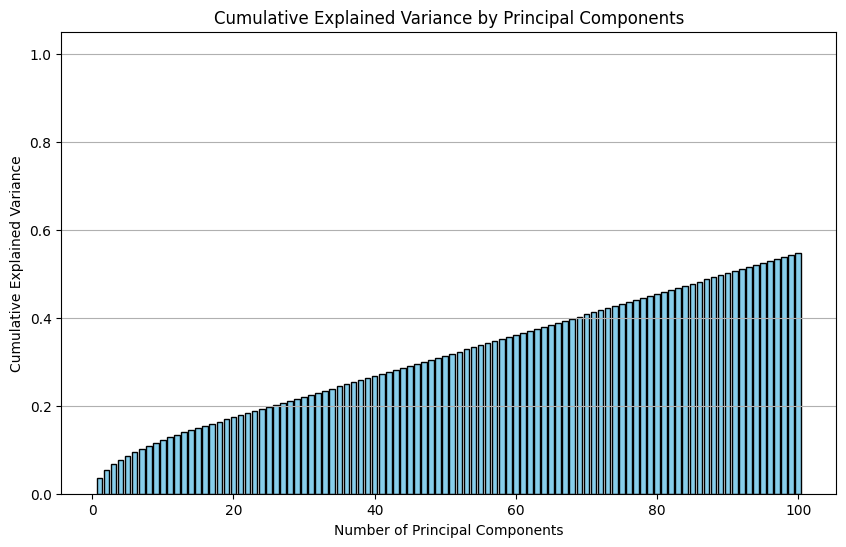

25. PCA¶
import pandas as pd
from sklearn.model_selection import train_test_split
from sklearn.preprocessing import LabelEncoder, StandardScaler
from sklearn.compose import ColumnTransformer
from sklearn.impute import SimpleImputer
from sklearn.preprocessing import OneHotEncoder
from sklearn.preprocessing import OrdinalEncoder
import numpy as np
import os
import pandas as pd
# These lines would load the data locally
data_root = "./"
filename = "Life_Expectancy_Data.csv"
filepath = os.path.join(data_root, filename)
# We'll fetch it directly from the web
# data_url = "https://aet-cs.github.io/white/ML/lessons/Life_Expectancy_Data.csv"
df = pd.read_csv(filepath)
target = "Life expectancy"
df.describe()
| Year | Life expectancy | Adult Mortality | infant deaths | Alcohol | percentage expenditure | Hepatitis B | Measles | BMI | under-five deaths | Polio | Total expenditure | Diphtheria | HIV/AIDS | GDP | Population | thinness 1-19 years | thinness 5-9 years | Income composition of resources | Schooling | |
|---|---|---|---|---|---|---|---|---|---|---|---|---|---|---|---|---|---|---|---|---|
| count | 2938.000000 | 2928.000000 | 2928.000000 | 2938.000000 | 2744.000000 | 2938.000000 | 2385.000000 | 2938.000000 | 2904.000000 | 2938.000000 | 2919.000000 | 2712.00000 | 2919.000000 | 2938.000000 | 2490.000000 | 2.286000e+03 | 2904.000000 | 2904.000000 | 2771.000000 | 2775.000000 |
| mean | 2007.518720 | 69.224932 | 164.796448 | 30.303948 | 4.602861 | 738.251295 | 80.940461 | 2419.592240 | 38.321247 | 42.035739 | 82.550188 | 5.93819 | 82.324084 | 1.742103 | 7483.158469 | 1.275338e+07 | 4.839704 | 4.870317 | 0.627551 | 11.992793 |
| std | 4.613841 | 9.523867 | 124.292079 | 117.926501 | 4.052413 | 1987.914858 | 25.070016 | 11467.272489 | 20.044034 | 160.445548 | 23.428046 | 2.49832 | 23.716912 | 5.077785 | 14270.169342 | 6.101210e+07 | 4.420195 | 4.508882 | 0.210904 | 3.358920 |
| min | 2000.000000 | 36.300000 | 1.000000 | 0.000000 | 0.010000 | 0.000000 | 1.000000 | 0.000000 | 1.000000 | 0.000000 | 3.000000 | 0.37000 | 2.000000 | 0.100000 | 1.681350 | 3.400000e+01 | 0.100000 | 0.100000 | 0.000000 | 0.000000 |
| 25% | 2004.000000 | 63.100000 | 74.000000 | 0.000000 | 0.877500 | 4.685343 | 77.000000 | 0.000000 | 19.300000 | 0.000000 | 78.000000 | 4.26000 | 78.000000 | 0.100000 | 463.935626 | 1.957932e+05 | 1.600000 | 1.500000 | 0.493000 | 10.100000 |
| 50% | 2008.000000 | 72.100000 | 144.000000 | 3.000000 | 3.755000 | 64.912906 | 92.000000 | 17.000000 | 43.500000 | 4.000000 | 93.000000 | 5.75500 | 93.000000 | 0.100000 | 1766.947595 | 1.386542e+06 | 3.300000 | 3.300000 | 0.677000 | 12.300000 |
| 75% | 2012.000000 | 75.700000 | 228.000000 | 22.000000 | 7.702500 | 441.534144 | 97.000000 | 360.250000 | 56.200000 | 28.000000 | 97.000000 | 7.49250 | 97.000000 | 0.800000 | 5910.806335 | 7.420359e+06 | 7.200000 | 7.200000 | 0.779000 | 14.300000 |
| max | 2015.000000 | 89.000000 | 723.000000 | 1800.000000 | 17.870000 | 19479.911610 | 99.000000 | 212183.000000 | 87.300000 | 2500.000000 | 99.000000 | 17.60000 | 99.000000 | 50.600000 | 119172.741800 | 1.293859e+09 | 27.700000 | 28.600000 | 0.948000 | 20.700000 |
def get_data(filename):
df = pd.read_csv(filename)
return df
For today’s exercise we will return to an ordinal encoding of the country feature. From last class it was obvious that counry has a tremendous impact on life expectancy. But we’re interested in more general relationships. We want to see what can be said without relying on knowledge of the country. So our preprocessing method will comment out the ‘get_dummies’
def pre_process_data(df, one_hot_encode = False):
target = "Life expectancy"
# Use sklearn Imputers to fill in the categorical and numerical columns
simple_median = SimpleImputer(strategy='median')
simple_most_freq = SimpleImputer(strategy='most_frequent')
num_cols = df.select_dtypes(include=np.number).columns # numerical data
cat_cols = df.select_dtypes(include=object).columns # categorical data
df[num_cols] = simple_median.fit_transform(df[num_cols])
df[cat_cols] = simple_most_freq.fit_transform(df[cat_cols])
if one_hot_encode:
# O_encoder = OrdinalEncoder()
# df[cat_cols]= O_encoder.fit_transform(df[cat_cols])
df = pd.get_dummies(df, dtype=int)
return df
We add a method here to drop features. We will only use this sometimes, so it is not a part of “pre_process_data”
def feature_selection(df):
df = df.drop(["under-five deaths", "Diphtheria", "thinness 1-19 years", "Polio"], axis = 1)
return df
The random_state logic here is a bit different. We want randomized training set selection as the default so unless the caller sets random_state=true, we return a different training_set each time
def get_test_train(df, test_size = 0.2, random_state = False):
X = df[:,0:-1]
y = df[:,-1]
if random_state:
X_train, X_test, y_train, y_test = train_test_split(X,y,test_size=test_size, random_state=42)
else:
X_train, X_test, y_train, y_test = train_test_split(X,y,test_size=test_size)
return X_train, X_test, y_train, y_test
import pandas as pd
from sklearn.decomposition import PCA
from sklearn.preprocessing import StandardScaler
import matplotlib.pyplot as plt
df = get_data(filename)
df = pre_process_data(df, True)
# First, separate out the features you want to use in PCA
features = df.select_dtypes(include=['number']).columns # Select numerical columns if needed
X = df[features]
# Standardize the features
scaler = StandardScaler()
X_scaled = scaler.fit_transform(X)
# Perform PCA
num_components = 100
pca = PCA(n_components=num_components) # Start with 2 components for easy visualization
X_pca = pca.fit_transform(X_scaled)
# Calculate cumulative explained variance
cumulative_variance = np.cumsum(pca.explained_variance_ratio_)
# Plot the cumulative explained variance as a bar plot
plt.figure(figsize=(10, 6))
plt.bar(range(1, len(cumulative_variance) + 1), cumulative_variance, color='skyblue', edgecolor='k')
plt.xlabel('Number of Principal Components')
plt.ylabel('Cumulative Explained Variance')
plt.title('Cumulative Explained Variance by Principal Components')
plt.ylim(0, 1.05) # Set y-axis limits to show full cumulative range up to 100%
plt.grid(axis='y')
plt.show()

df = get_data(filename)
df = pre_process_data(df, True)
# First, separate out the features you want to use in PCA
y = df[target]
df = df.drop(target, axis=1)
features = df.select_dtypes(include=['number']).columns # Select numerical columns if needed
X = df[features]
# Standardize the features
scaler = StandardScaler()
X_scaled = scaler.fit_transform(X)
# Perform PCA
num_components = 100
pca = PCA(n_components=num_components)
X_pca = pca.fit_transform(X_scaled)
X_train, X_test, y_train, y_test = train_test_split(X_pca, y, test_size=0.2, random_state=42)
linreg = LinearRegression()
model = linreg.fit(X_train, y_train)
print("Score = ", linreg.score(X_test, y_test))
---------------------------------------------------------------------------
NameError Traceback (most recent call last)
Cell In[9], line 15
11 X_pca = pca.fit_transform(X_scaled)
13 X_train, X_test, y_train, y_test = train_test_split(X_pca, y, test_size=0.2, random_state=42)
---> 15 linreg = LinearRegression()
16 model = linreg.fit(X_train, y_train)
17 print("Score = ", linreg.score(X_test, y_test))
NameError: name 'LinearRegression' is not defined
plt.scatter(linreg.predict(X_test), y_test);
plt.plot([40,90],[40,90], color='red')
[<matplotlib.lines.Line2D at 0x779ef9054510>]
X_scaled.shape
(2938, 214)